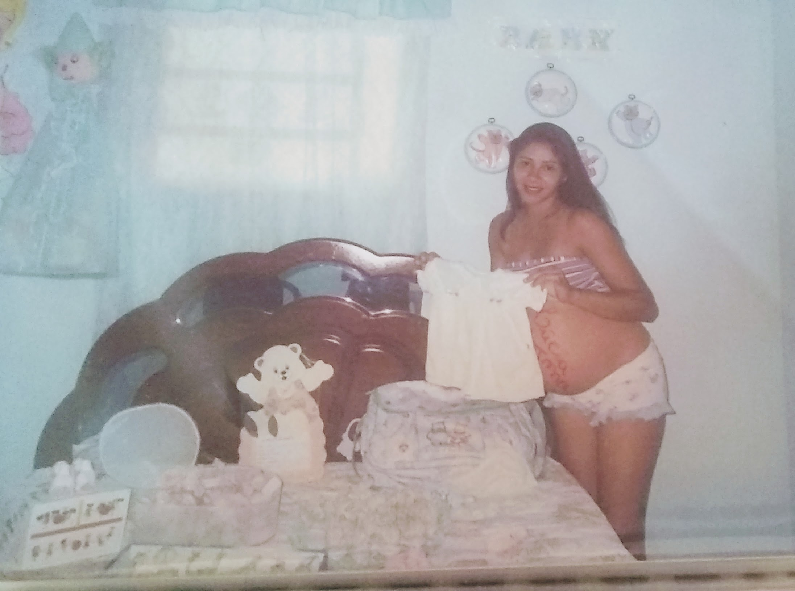
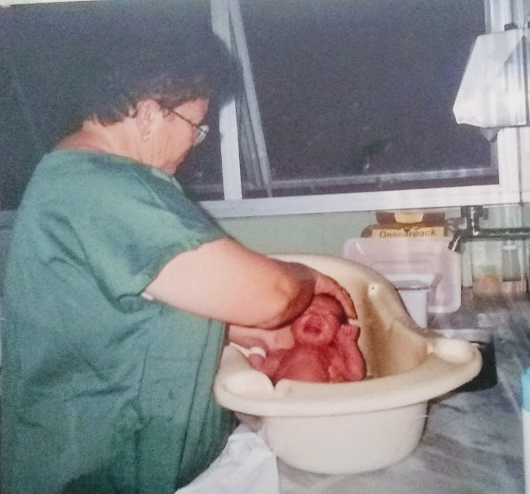
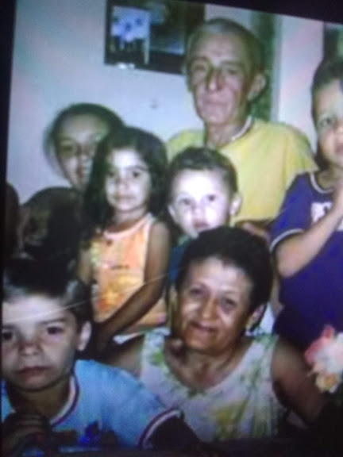

-

Gestação
Depois de inúmeras vezes ir ao médico para fazer ultrassom
aos nove(9) meses minha mãe finalmente descobriu meu sexo,
depois de oito(8) meses de ansiedade.
-

Nascimento e banho
Nascida no dia cinco(5) de Janeiro de 2003, ás 6:53PM, com
com aproxiamdamente uma(1) semana de atraso do esperado,
minha avó deu-me meu primeiro banho.
-
Fotos
Ao fazer mais ou menos dois(2) anos
minha mãe decide fazer um book(sessão de fotos)
para guardar de lembrança.
-

Fotos
Uma foto muito antiga, mas cheia de alegria
com meus primos e parentes mais próximos.